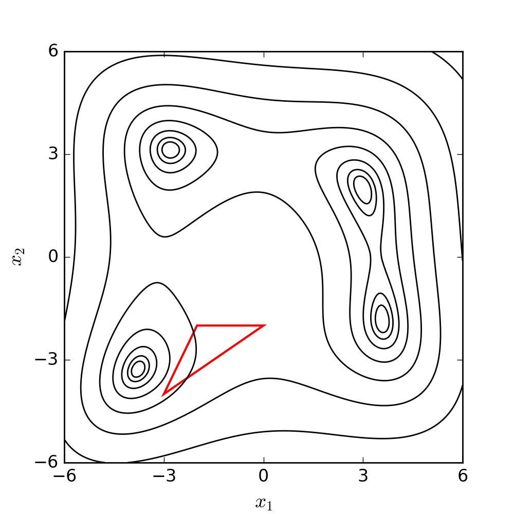

Machine Learning Techniques - 1
Mathematical foundations to Modelling and ML
Table of Contents
A: Probability Theory
Probability
- Definition: The likelihood of an event to occur
- \(\Omega\): All possible events
- Example with probability tree

- \[\sum_{\omega \in \Omega}\mathbb{P}(\omega) = 1\]
Union, Intersect and conditional
- Union: \(\mathbb{P}(A \cup B) = \mathbb{P}(A) + \mathbb{P}(B)\)
- Intersect: \(\mathbb{P}(A \cap B) = \mathbb{P}(A) \times \mathbb{P}(B)\)
- Conditional: \(P(A|B) = \frac{P(A \cap B)}{P(B)}\)
- Bayes Theorem: \[ P(A|B) = \frac{P(B|A)P(A)}{P(B)} \]
Total Probability Theorem - Marginal
- \(\Omega = \{A, B_1, ..., B_n\}\)
- \[P(A) = \sum_{i} P(A|B_i)P(B_i)\]
- \[P(A) = \sum_{i} P(A \cap B_i)\]
Random variable
- Probability Space \((\Omega, \mathcal{F}, \mathbb{P})\):
- \(\Omega\): Sample space containing all possible outcomes.
- \(\mathcal{F}\): set of events, subsets of \(\Omega\) to which we assign probabilities.
- \(\mathbb{P}\): Probability measure assigning a probability to each event in \(\mathcal{F}\).
- Measurable Space E where values or intervals are associated with events.
- Examples: \(\mathbb{R}\), \(\mathbb{R}^+\), \(\mathbb{N}\) or \(\{0,1\}\)
- Definition: A random variable \(X\) is a measurable function \(\Omega \mapsto E\)
Discrete vs Continuous
- Discrete: Countable and finite within any range.
- Continuous: Uncountable and infinite within any range.
Distribution function
Cumulative distribution function: \(F_X(x) = \mathbb{P}(X \leq x)\)
Density function for continuous variables:
- \(f(x)\) such that \(\mathbb{P}(a \leq X \leq b) = \int_a^b f(x) dx\)
- \(F_X(x) = \int_{-\infty}^x f(u) du\)
Moments of Random variables
Expectation:
- Discrete: \(E(X) = \sum_{i} x_i P(X=x_i)\)
- Continuous: \(E(X) = \int x f(x) dx\)
The nth raw moment: \(\mu'_n = E(X^n)\)
The nth central moment: \(\mu_n = E[(X-E(X))^n]\)
Variance: second central moment \(\mu_2\)
- \(\text{Var}(X) = E[(X - E(X))^2]\)
- \(\text{Var}(X) = E(X^2) - [E(X)]^2\)
Standard deviation \(\sigma\) is defined such as \(\sigma^2 = \text{Var}(X)\)
Standardized moments
The nth standardized moment \(\gamma_k = \frac{\mu_k}{(\sigma)^k}\)
\(\gamma_1 = 0\), \(\gamma_2 = 1\)
Skewness the 3rd standardized moment:
- Skewness is a measure of asymmetry around the function mean or location.
Kurtosis the 3rd standardized moment:
- (from Greek: κυρτός, kyrtos or kurtos, meaning “curved, arching”)
- Kurtosis is a measure of tailedness
Continuous Law : Normal
- Normal(Gaussian) distribution
- 2 parameters
- \(\mu\) – location or mean
- \(\sigma > 0\) – standard deviation
| Moment | Value |
|---|---|
| \(E(X)\) | \(\mu\) |
| \(\text{Var}(X)\) | \(\sigma^2\) |
| Skewness | 0 |
| Kurtosis | 3 |
\(f(x) = \frac{1}{\sigma \sqrt{2\pi}} e^{-\frac{(x-\mu)^2}{2\sigma^2}}\)
Continuous Law : Gamma
- Gamma distribution (Real Positive)
- 2 parameters
- \(\alpha > 0\) – shape
- \(\lambda > 0\) – rate
| Moment | Value |
|---|---|
| \(E(X)\) | \(\frac{\alpha}{\lambda}\) |
| \(\text{Var}(X)\) | \(\frac{\alpha}{\lambda^2}\) |
| Skewness | \(\frac{2}{\sqrt{\alpha}}\) |
| Kurtosis | \(3 + \frac{6}{\alpha}\) |
\(f(x) = \frac{\lambda^\alpha x^{\alpha-1}}{\Gamma(\alpha)} e^{-\lambda x}\)
Other laws
- Uniform
- Beta: for continuous values between 0 and 1
- Binomial/Bernoulli: Positive discrete
Law of Large Numbers (LLN)
Definition As the number of independent trials increases, the sample average converges to the expected value.
For any \(\epsilon > 0\)
- \(\lim_{n \to \infty} \mathbb{P}\left(|\bar{X}_n - \mu| > \epsilon\right) = 0\) as \(n \rightarrow \infty\),
- \(\bar{X}_n\) is the sample average of n observations.
LLN in ML
Model Training: Given more training data, the model’s performance on the training data (like the loss) tends to stabilize, providing a more reliable estimate of its generalization to unseen data (if no bias).
Evaluation Metrics: As we evaluate a model on more samples, metrics like accuracy, F1 score, or Mean Squared Error will converge to a more consistent value, representing the model’s true performance.
Central limit theorem
The distribution of the sum (or average) of a large number of independent, identically distributed random variables approaches a normal (Gaussian) distribution, regardless of the original distribution of the variables.
Given \(X_1, X_2, ...\) independent and identically distributed with mean \(\mu\) and variance \(\sigma^2\)
\(\frac{\bar{X}_n - \mu}{\sigma/\sqrt{n}} \xrightarrow{n \to \infty} \mathcal{N}(0,1)\)
Central limit theorem in ML
- In the ML context:
- the sampling distribution tends to be normal
- regardless of the true distribution
- Prediction errors tend to be normally distributed when:
- The sampling increases, when working in aggregate/batch
- The model complexity increases (number of parameters)
- Ensemble Methods:
- Aggregation of models
- K-fold validation:
- Splits of training/validation
- metrics tend to be normally distributed
Hypothesis testing
- Systematic method used in statistics
- Evaluate two competing statements
- Which is more consistent with the observed data ?
- Often based on assumptions on underlying distributions/dependencies ?
Hypothesis testing: Null hypothesis
- The null hypothesis (\(H_0\)) is a statement about a population
- About one or several parameters (e.g. \(\mu\))
- Typically, \(H_0\) represents
- the status quo (\(\mu = 0\))
- a situation of no effect or no difference (\(\mu_1 = \mu_2\))
Hypothesis testing: Power/ errors
Two types of errors in hypothesis testing (1):
- Type I error (False positive):
- Rejecting \(H_0\) when it is actually true.
- Denoted by \(\alpha\) (alpha)
- aka significance level.
- Type II error (False negative):
- Not rejecting \(H_0\) when it is false.
- denoted by \(\beta\) (beta)
- power of a test is \(\pi = 1-\beta\)
- The power is the probability of correctly rejecting a false \(H_0\).
Hypothesis testing: Test statistic
A test statistic is a
- Standardized value calculated from sample data
- The realization of a random variable with a known distribution
- \(\bar{\mu_X}\): sample mean
- \(\bar{\sigma_X}\): sample standard deviation
- \(n\): sample size
In case where \(X \sim \mathcal{N}(0,1)\), then \(X \sim \mathcal{Student}(\nu)\) (2)
\(\nu\) is the degrees of freedom (\(n-1\)) \(\to\) shape of the student-distribution.
Hypothesis testing:P-Value
The p-value measures the evidence against a null hypothesis.
Mathematically:
- \(P(T \geq t \,|\, H_0 \, \text{is true})\) for right-tailed tests
- \(P(T \leq t \,|\, H_0 \, \text{is true})\) for left-tailed tests
It is the probability of observing a test statistic:
- as extreme, or more extreme, than from the sample
- assuming that the null hypothesis is true.
- if low, then data are inconsistent with \(H_0\).
General guideline:
- If \(p-value \leq \alpha\), then reject \(H_0\), else do not reject.
B. Statistical Modelling
Fixed effects
Parameter(s) in a model that do not vary across sampling.
Example: Linear regression with fixed effects
\[ \left\{ \begin{array}{ll} y_{i} = \alpha + \beta x_{i} + \epsilon_{i} \\ \epsilon_{i} \sim \mathcal{N}(0,1) \end{array} \right. \] Where \(\alpha\) and \(\beta\) are fixed effects.
All the sampling variation is absobed in the error.
\(\rightarrow\) Mostly used in ML
Random effect
Parameters are random variables
Example: Linear regression with random effects:
\[ \left\{ \begin{array}{ll} y_{it} = \alpha_i + \beta_i x_{it} + \epsilon_{it} \\ \alpha_i \sim \mathcal{N}(\mu_\alpha, \tau^2_\alpha) \\ \beta_i \sim \mathcal{N}(\mu_\beta, \tau^2_\beta) \\ \epsilon_{it} \sim \mathcal{N}(0, \sigma^2) \end{array} \right. \]
- \(t \to\) sampling/observation
- \(i \to\) group (e.g. gender if y is size)
Mixed Effects
- Generalization
- Parameters can be either
- Fixed (fixed effect)
- Random variable (random effect)
Multilevel/Hierarchical models
A type of mixed-effects model where data is nested within multiple levels of groups.
\[ \left\{ \begin{array}{ll} y_{ijkt} = \alpha_i + \beta_j x_j + \gamma_k z_k + \epsilon_{ijkt} \\ \alpha_i \sim \mathcal{N}(\mu_{\alpha}, \sigma) \\ \beta_j \sim \mathcal{N}(\mu_{\beta}, \sigma) \\ \gamma_k \sim \mathcal{N}(\mu_{\gamma}, \sigma) \\ \epsilon_{ijkt} \sim \mathcal{N}(0, 1) \end{array} \right. \]
- \(i \to\) student-level / no features
- \(j \to\) classroom-level / \(x_j\) feature like class size
- \(k \to\) school-level / \(z_k\) feature like school budget
- \(t \to\) sampling/observation (multiple tests)
Nested models
- A specific case from another model
- Example: no school effect: \(\gamma_k = 0\)
- Important for hypothesis testing with a test elaborated to compare nested models (seen after)
C. Model Inference
Likelihood definition for a model
The likelihood is a probability defined for a model \[ \mathbb{P}_\mathcal{M}( y | \theta) \]
with:
- \(\mathcal{M}\) the model
- \(\theta\) the parameters
- \(y\) the observations / measurements / sampling
- The probability of the parameters given the observation and a model
- How well does the model explain the observed data ?
The likelihood is a function of the parameters \(\mathcal{L}_{\mathcal{M}}(\theta) = \mathcal{L}(\theta)\)
Maximum Likelihood Estimation (MLE)
- MLE aims to find the parameter(s) \(\theta\) that maximize the likelihood function \(\mathcal{L}(\theta)\).
\[\hat{\theta}_{MLE} = \arg \max_{\theta} \mathcal{L}(\theta)\]
- \(\hat{\theta}_{MLE}\) is the maximum likehood estimate(s)
- inferred from likelihood maximization
MLE and fixed effects, normal
Fixed effect model and normally distributed error
\[ \left\{ \begin{array}{ll} y_{i} = f_{\theta}(xi) + \epsilon_{i} \\ \epsilon_{i} \sim \mathcal{N}(0,\sigma) \end{array} \right. \]
From the normal density function: \(\mathbb{P}(\epsilon_i | \theta) = \frac{1}{\sqrt{2\pi\sigma^2}} \exp \left( -\frac{(\epsilon_i)^2}{2\sigma^2} \right)\)
or \(\epsilon_i = y_i - \hat{y_i}\)
Then : \(\mathcal{L}(\theta) = \prod_{i=1}^{n} \mathbb{P}(\epsilon_i | \theta)\)
From Likelihood to loss: Least Square
\[ log(\mathcal{L}(\theta)) = - \frac{n}{2} log(2 \pi \sigma) - \frac{1}{2 \sigma^2} \sum_i{(y_i - \hat{y_i})^2} \]
\[ log(\mathcal{L}(\theta)) \propto - \sum_i{(y_i - \hat{y_i})^2} \]
\[ \arg \max_{\theta} \mathcal{L}(\theta) = \arg \min_{\theta} \sum_i{(y_i - \hat{y_i})^2} \]
\(\to\) Least squared is equivalent to MLE in such problem
Information Criteria for model selection
Used to balance fit and complexity. Two common criteria:
- AIC: \(-2\log(\mathcal{L}) + 2k\)
- BIC: \(-2\log(\mathcal{L}) + k\log(n)\)
Where \(L\) is likelihood, \(k\) is number of parameters, and \(n\) is sample size.
Likelihood ratio test for nested model
Given:
\(\mathcal{L}_1\): likelihood under the full (or complex) model.
\(\mathcal{L}_0\): likelihood under the restricted (or simpler) model.
Test statistic: \(D = -2(\log(\mathcal{L}_0) - \log(\mathcal{L}_1))\)
Wilks’ Theorem \(D \xrightarrow{n \to \infty} \chi^2\)
General linear regression (GLR)
A general linear problem can be defined as: \[Y = XB + U\]
Where:
- \(Y\) is an \(n \times m\) matrix of \(n\) observations of \(m\) variables.
- \(X\) is an \(n \times p\) matrix of \(n\) observations of \(p\) features.
- \(B\) is an \(p \times m\) matrix of fixed-effect parameters for each pair variable-feature.
- \(U\) is an \(n \times m\) matrix for errors.
GLR: Minimizing the SSR
- \(SSR(B) = (Y - XB)^T (Y - XB)\)
- \(SSR(B) = Y^T Y − Y^T X B − B^T X^T Y + B^T X^T X B\)
- \(\Delta SSR(B) = 0 - X^TY - X^TY + 2 X^T X B\)
- \(\Delta SSR(B) = - 2X^TY + 2 X^T X B\)
To find the optimum of \(SSR(B)\), we try to solve \(\Delta SSR(B) = 0\), ie the equation:
\[X^TY = X^T X B\]
GLR: Analytical resolution
If \(X^T X\) is invertible, then
\[\hat{B} = (X^T X)^{-1} X^TY\]
For \(X\) to be invertible, it needs to be a full rank matrix:
- No feature (column in \(X\)) can be expressed as a linear combination of other features
- \(n \geq p\)
- Non-zero variance for a feature
Grid search optimization
- Systematic search through a pre-defined space for parameters.
- Evaluates each combination to find the best.
- Example for minimization
Newton Optimization
- Iterative method using gradient and Hessian
from scipy.linalg import inv, det, norm
function newton_optimization(grad, hess, x0, tol=1e-6, max_it=1000):
"""
grad: function for computing the gradient vector of shape (n, 1)
hess: function for computing the hessian matrix of shape (n, n)
x0: initial guess of shape (n, 1)
tol: stopping criterion for the difference between consecutive x values
max_it: maximum number of iterations allowed
"""
x = x0
for it in range(max_it):
x_grad = grad(x)
x_hess = hess(x)
assert(det(x_hess) != 0)
x = x + np.matmul(inv(x_hess), x_grad)
if norm(x_grad) < tol:
return x # Found the optimum
x_current = x_next
raise Error("Maximum iterations reached without convergence!")Nelder-Mead Optimization3
function nelder_mead(f, s0, coef, max_it=1000, tol=1e-6):
"""
f: target function to be minimized
s0: list of n+1 initial guesses (vertices of the initial simplex)
coef: reflection, contraction, expansion, shrink coefficients
max_it: maximum number of iterations allowed
tol: stopping criterion for the difference in function values
"""
s = s0
for it in range(max_it):
s.sort(key=lambda v: f(v)) # Sorting from low to high
centroid = [sum(v[i] for v in s[:-1]) # Without the worst
refl_v = centroid + coef[0] * (centroid - s[-1]) # Reflect the worst
if f(s[0]) <= f(refl_v) < f(s[-2]): # if good but not best
simplex[-1] = refl_v # replace the worst
elif f(refl_v) < f(s[0]): # elif best, try expansion
expe_v = centroid + coef[1] * (refl_v - centroid)
if f(expe_v) < f(s[0]): simplex[-1] = expe_v
else: simplex[-1] = refl_v
else: # contract the worst or shrink all others
cont_v = centroid + coef[2] * (s[-1] - centroid)
if f(cont_v) < f(s[-1]): s[-1] = cont_v
else: s = [s[0] + coef[3] * (s[i] - s[0]) for i in range(1, len(s))]
if abs(f(s[-1]) - f(s[0])) < tol:
return s[0]

Source: WIKIPEDIA
Gradient Descent Optimization4
- Iterative method using only the first order derivative
- Introduction of a learning rate
function gradient_descent(f_gradient, x0, lr, max_it=1000, tol=1e-6):
"""
grad: function for computing the gradient vector of shape (n, 1)
x0: initial guess of shape (n, 1)
lr: learning rate (step size)
max_it: maximum number of iterations allowed
tol: stopping criterion for the difference between consecutive x values
"""
x = x0
for it in range(max_it):
x_grad = grad(x)
newton_step = lr * grad(x)
x = x - newton_step
if norm(newton_step) < tolerance: # OR ABSOLUTE MAXIMUM
return x # Found the minimum
raise Error("Maximum iterations reached without convergence!")Other Optimization Algorithms
- Hierarchical Grid-search
- Lowering the resolution iteratively on the best found intervals.
- Random search
- For high dimension space.
- Sampling the search space.
- BFGS5
- Use inverse hessian approximation.
- Update the approximation at each step.
- Compatible with boundaries: BFGS-B.
- Stochastic Gradient Descent6
- GD on a sampling of the observations.
- Suitable for large datasets.
Key points in Optimization
- Gradient and Hessian
- Known ? Approximated ?
- Computational costs
- Hyperparameters
- Initial Guess
- Learning rate
- Iterations / Tolerance
- …
- Randomness ?
- Repeat with several initial guesses
- Randomness in algorithm ?
The Bayesian framework
- Posterior probability: \(\mathbb{P}(\theta | y)\)
- Prior: \(\mathbb{P}(\theta)\)
- Likelihood: \(\mathcal{L}(\theta) = \mathbb{P}( y | \theta)\)
\[ \mathbb{P}(\theta | y) = \mathcal{L}(\theta) \mathbb{P}(\theta)\]
- Expectation in either likelihood (Frequentism) or posterior (Bayesian)
- Maximum Posterior optimization is equivalent to MLE with uniform priors.
Recommendation to go further7
Playlist on youtube
D. Important Definitions
X, Data or Features
Features: Variables that are collected for each “observation”. Nature of those variables can be diverse (E.g. measure, design).
X: Often refers to the matrix of feature with lines as observations and columns as features.
Data: Data can refers to X or to a larger entity with the target value (variable to predict)
Y, Targets, Predicted Values or Transformed Values
Y typically represents the variable or the output in statistical modeling and machine learning.
Targets: The actual values of Y in the dataset. These are what the model aims to predict or reproduce.
Predicted Values (\(\hat{Y}\)): The values of Y as estimated or predicted by the model based on the features, X.
Transformed Values: The values of Y as estimated or predicted by the model based on the features, X when there is no meaning for prediction as there are no target value (unsupervised)
M/F, Model, Parameters and Hyperparameters
M or F stands for the model or function that is being trained or used for predictions/transformations.
Model: Represents the specific algorithm or method being used to learn from data and make predictions. Examples include linear regression, decision tree, neural network, etc.
Parameters: Part of the model that is being trained from the data through optimization to maximize the objective function.
Hyperparameters: Part of the model that is set before the optimization of parameters. Nevertheless, hyperparameters can be learned thanks to nested optimizations using validation techniques.
Predict, Transform, Fit and Infer
Predict: The process of using a model to estimate or forecast the output (Y) given data (X). Purpose of training a model is to improve the prediction.
Transform: The process of using a model to transform given data (X) into transformed data (Y) when there is not an explicit target for example in the case of dimensionality reduction.
Fit: The process of training a model on a given dataset.
Infer:
- (common) Prediction based on new, unseen data.
- (less common) The optimization of parameters given a model and a training dataset.
Beyond Likelihood-based reasoning
- Supervised learning
- Easily associated with likelihood-based reasoning due to the error term
- Also many methos not based on likelihood reasoning: Support Vector Machine and Hinge Loss
- Unsupervised learning
- Principal Component Analysis: Maximizing Variance
- Gaussian Mixture Model: Likelihood-based
- Reinforcement learning
- Reward is maximized.
- Mostly not based on likelihood-based reasoning.
Conclusion
Probability theory is essential
Statistical models at the core of ML
Likelihood function and maximization
From likelihood to Least Square
Solving through optimization
Acknowledgement
For fruitful discussions and corrections.
- Felix Geoffroy
- Thomas Chaverondier
- Grégory Morel
- John Samuel